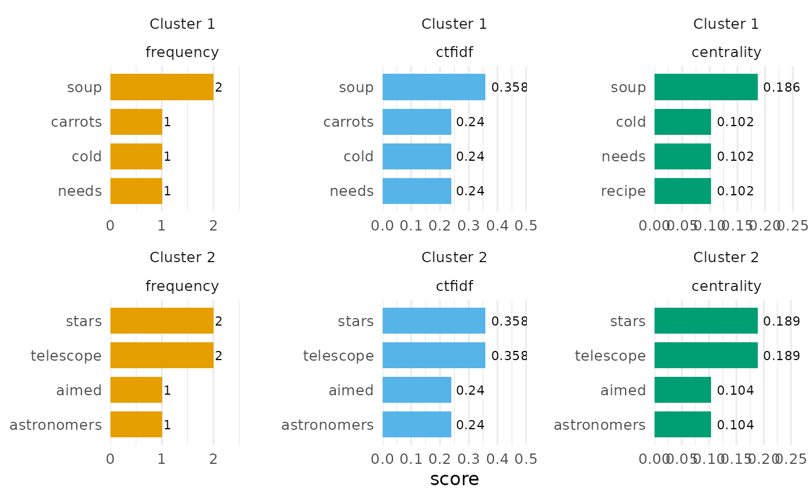

For a clustered hypergraph, ranks each cluster's hyperedges – on a
nodes = "doc" text_hypergraph(), its words – by one of four scores
computed from the hypergraph, or by a score table supplied from another
fit. This is the topic-description step that turns a partition from
hg_cluster() into named topics.
Usage
hg_keywords(
hg,
clusters,
n = 10L,
type = NULL,
sort_by = c("score", "share"),
min_docs = 1L,
centrality = c("pagerank", "clique", "Z", "H"),
scores = NULL,
collapse = FALSE
)
# S3 method for class 'hypernets_keywords'
print(x, ...)
# S3 method for class 'hypernets_keywords'
plot(x, value = c("score", "share"), label = TRUE, ncol = NULL, ...)
hypergraph_keywords(
hg,
clusters,
n = 10L,
type = NULL,
sort_by = c("score", "share"),
min_docs = 1L,
centrality = c("pagerank", "clique", "Z", "H"),
scores = NULL,
collapse = FALSE
)Arguments
- hg
The hypergraph the clustering was computed on, or the sentence hypergraph of the same documents (see Sentence scope).
- clusters
The tidy table returned by
hg_cluster()(columnsnode,cluster), or a named vector of cluster labels.- n
Keywords per cluster (default
10);Infreturns all.- type
Which score ranks the words: any of
"mass","frequency","ctfidf","centrality". Several at once give one block of rows per score. Default"mass", or none when onlyscoresis wanted.- sort_by
"score"(default) ranks a cluster's words by the selected score, the heavy vocabulary;"share"ranks them by the fraction of the word's total score that falls in the cluster, the distinctive vocabulary. Ties are broken by the other column, then alphabetically.- min_docs
Keep only words that occur in at least this many of the cluster's documents (default
1). The support floor that stopssort_by = "share"from surfacing words a cluster owns because they occur once.- centrality
For
type = "centrality", thehypergraph_centrality()measure:"pagerank"(default; it reads the incidence weights and does not tie on words present in every document, as the clique measure does),"clique","Z"or"H".- scores
An external score table (columns
node,wordand one numeric column), summed per cluster and added as its own block.- collapse
If
TRUE, return one row per type and cluster with the words joined into a single comma-separated string – a display table, not tidy data. DefaultFALSE.- x
- ...
Unused; for S3 consistency.
- value
For
plot(): which column the bars show,"score"(default) or"share"; match it tosort_by.- label
For
plot(): print each bar's value at its end (defaultTRUE).- ncol
For
plot(): panels per row; default one column per score type, so clusters run down and types across. With a single type and many clusters, pass e.g.ncol = 4.
Value
A base data.frame of class hypernets_keywords, one row per
type-cluster-keyword triple, columns type, cluster, size (the
cluster's documents), rank, word, score (the selected score),
share (score divided by the word's summed score over all
clusters) and n_docs (the cluster's documents containing the word),
ranked by sort_by within type and cluster; only words with a
positive score and at least min_docs documents appear. With
collapse = TRUE: one row per type and cluster, columns type,
cluster, size and words. The print method shows the collapsed
view, truncated to the console width; as.data.frame() is the long
form. Raises hypernets_bad_input for unknown node names, a type that
needs the token layer on a hypergraph without one, or a malformed
scores table.
plot() returns a ggplot: one panel per cluster (rows) and score type
(columns), each with its own word axis, horizontal bars of value per
word, Okabe-Ito fill by type. It needs the long form and raises
hypernets_bad_input on a collapsed table.
Details
"mass"(default): the summed incidence weight a cluster's documents place on the word (tf-idf mass underweight = "tfidf", counts underweight = "n"). Works on any hypergraph."frequency": the raw token count of the word in the cluster's documents, whatever the incidence weighting."ctfidf": class-based tf-idf (Grootendorst 2022), the topic representation BERTopic uses: the cluster's L1-normalised term frequency timeslog(A / f_w + 1), wheref_wis the word's corpus count andAthe average token count per cluster (truncated to an integer, as in the reference implementation)."centrality": the word's centrality within the cluster's own word hypergraph (words as nodes, the cluster's documents as hyperedges, incidence = the stored weights), fromhypergraph_centrality()with the measure named incentrality.
"frequency", "ctfidf" and "centrality" need the token-level layer
of a bag-of-words document hypergraph (construction = "bag",
nodes = "doc"); other hypergraphs raise hypernets_bad_input.
Sentence scope. When hg is a text_hypergraph(construction = "sentence") of the documents, clusters still names documents, and the
scores are computed over the cluster's sentences: two words are then
related by sharing a sentence rather than a document. "mass" and
"frequency" sum the in-sentence counts; "centrality" is the word's
centrality among the cluster's sentence hyperedges.
External scores. scores takes a data.frame with columns node,
word and one numeric column (for instance the attention table from
hg_hypergat(what = "attention")). Its values are summed per cluster
and reported as their own block, labelled by the numeric column's name.
References
Grootendorst, M. (2022). BERTopic: Neural topic modeling with a class-based TF-IDF procedure. arXiv:2203.05794.
Examples
hg <- text_hypergraph(c(
cooking_1 = "simmer the soup with onions and carrots",
cooking_2 = "this soup recipe needs salt on a cold night",
space_1 = "the telescope revealed a distant galaxy and stars",
space_2 = "astronomers aimed the telescope at the stars all night"
), stop_words = c("the", "with", "and", "a", "this", "at", "on", "all"))
topics <- hg_cluster(hg, k = 2, seed = 1)
hg_keywords(hg, topics, n = 3)
#> type cluster size words
#> mass Cluster 1 2 soup, carrots, cold
#> mass Cluster 2 2 stars, telescope, aimed
#> 6 rows in the long form (rank, score, share, n_docs): as.data.frame()
hg_keywords(hg, topics, n = 3, type = "ctfidf")
#> type cluster size words
#> ctfidf Cluster 1 2 soup, carrots, cold
#> ctfidf Cluster 2 2 stars, telescope, aimed
#> 6 rows in the long form (rank, score, share, n_docs): as.data.frame()
words <- hg_keywords(hg, topics, n = 4,
type = c("frequency", "ctfidf", "centrality"))
plot(words)

# distinctive rather than heavy vocabulary: rank by share, with support
hg_keywords(hg, topics, n = 3, sort_by = "share", min_docs = 1)
#> type cluster size words
#> mass Cluster 1 2 soup, carrots, cold
#> mass Cluster 2 2 stars, telescope, aimed
#> 6 rows in the long form (rank, score, share, n_docs): as.data.frame()